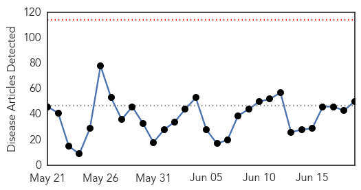

30 Day Trends
Web: 0 alerts, 0 warnings
Twitter: 0 alerts, 0 warnings
47 new deaths (11169 total)
334 new cases (27305 total)
Top Articles:
- 1.000
- Ebola experimental drugs and vaccines
- 1.000
- Ebola experimental drugs and vaccines
- 1.000
- Only 23 confirmed cases of Ebola remain in West Africa: WHO
- 1.000
- Why Ebola Won't Go Away In West Africa
- 0.999
- At Ebola's last mile, community engagement is key
- 0.999
- U.S. Officials Preparing for MERS Outbreak Following S. Korea
- 0.999
- Dr. Salia, the Sierra Leonean Doctor Treated the United States Has Died
- 0.998
- North Korea Has Super Vaccine To Cure MERS? South Korea Struggles With Ongoing Outbreak Of The Deadly Virus
- 0.996
- Liberians still face travel headaches even after Ebola
- 0.996
- Sequencing Ebola’s secrets
- 0.994
- Liberians still face travel headaches even after Ebola
- 0.993
- N. Korea claims to have ‘cure’ for Aids, Ebola, MERS
- 0.992
- Liberians still face travel headaches even after Ebola
- 0.992
- Liberians still face travel headaches even after Ebola
- 0.992
- Liberians still face travel headaches even after Ebola
- 0.990
- Did Ebola First Strike In Ancient Greece?
- 0.988
- Stop Harboring Sick People: Official Cautions Over Ebola
- 0.987
- US relaxes Ebola screening for Liberians
- 0.987
- North Korea Claims It Developed MERS Preventive Medication Despite Poor Health Care System
- 0.985
- Did the Ancient Greeks Get Ebola?
- 0.985
- US relaxes Ebola screening for travelers from Liberia
- 0.984
- North Korea says it has 'cure' for MERS, Ebola, AIDS
- 0.980
- St. Lawrence County creates disease response team
- 0.979
- Miracle cure claimed
- 0.978
- North Korea Claims to Have Cure for MERS, Ebola, AIDS
- 0.974
- Jean-Jacques Muyembe-Tamfum: Africa's veteran Ebola hunter
- 0.968
- Journey To Forécariah, The Snake's Head In The Fight Against Ebola
- 0.963
- N. Korea says its wonder drug can cure Ebola, AIDS, MERS & SARS — RT News
- 0.961
- Offline: “Our systems simply couldn't cope”
- 0.957
- BRDO donates learning materials to orphans « Awoko Newspaper
- 0.930
- North Korea Claims It Can Cure MERS, Ebola, And AIDS With ‘Strong Immune Reviver’ Drug
- 0.928
- N. Korea claims to have developed panacea for MERS
- 0.905
- Health Highlights
- 0.902
- MERS crisis: Do we need a NATO-type war strategy for potential epidemics?
- 0.900
- Kim Jong-un's scientists have supposedly found a cure for every disease in existence
- 0.889
- Ghana launches public campaign on safety of Ebola vaccine trial
- 0.831
- Sierra Leone Doubles Up Efforts to Achieve Zero New Ebola Cases by Mid-July - Sierra Leone
- 0.824
- North Korea 'cures' MERS, AIDS and cancer
- 0.822
- Special Adviser defends President’s Ebola war record
- 0.804
- Change in Ebola Screening Procedures for Travelers from Liberia Entering the United States
- 0.799
- Sierra Leone Doubles Up Efforts to Achieve Zero New Ebola Cases by Mid-July
- 0.775
- Scientists in Sussex awarded grant from US Government to fight Ebola
- 0.736
- PPE, Antimicrobial Textiles Manufacturers Address Maintaining Inventory in a Pandemic, Other Issues
- 0.714
- JFK, Chevron sign agreement
- 0.636
- Brussels Airlines to double flights in September « Awoko Newspaper
- 0.601
- NERC‘s Chief Executive Officer Says –Port Loko Must Now Strategise Well to Get Rid of Ebola
- 0.565
- How our innocent doctors became exposed to Ebola
- 0.539
- Ebola trial will not harm Ghanaians – WHO assures
- 0.524
- Former U.S.First Lady Rosalynn Carter Congratulates Liberia’s Minister of Health and Social Welfare for Improving Country’s Mental Health Care Systems and Services
- 0.524
- Major tribes make history in Mende Mosque « Awoko Newspaper
Showing top 50 articles...
Top Tweets:
- 0.955
- Ebola Update: 27331 confirmed probable & suspected cases reported in 3 most affected countries with 11173 deaths. EbolaResponse
- 0.843
- Tekmira issues a press release saying they've stopped their Ebola drug trial in Sierra Leone; TKM-Ebola didn't show a benefit to patients.
- 0.829
- Why Ebola Won't Go Away In West Africa - NPR http://t.co/LLtMhtzFBW ebola EVD
- 0.812
- There Are Now Fewer Than 25 Cases of Ebola - TIME http://t.co/fOhFFaEmfF ebola EVD
- 0.810
- RT: Tekmira issues a press release saying they've stopped their Ebola drug trial in Sierra Leone; TKM-Ebola didn't show a …
- 0.719
- North Korea Claims It Has Cure for MERS Ebola and AIDS - ABC News http://t.co/GWexb0En7c ebola EVD
- 0.674
- Tekmira Provides Update on TKM-Ebola-Guinea - CNNMoney http://t.co/IJK9UdyxJH ebola EVD
- 0.666
- North Korea Has Found The Cure For AIDS Ebola Cancer And Bird Flu - Popular Science http://t.co/p6SCXmvkaR ebola EVD
- 0.600
- Researchers Put Brakes on Study of Tekmira Ebola Drug in West Africa - Wall Street Journal http://t.co/o5Mpeblduv ebola EVD
- 0.589
- Sequencing Ebola's secrets - Harvard Gazette http://t.co/yrsC0fzClG ebola EVD
- 0.570
- Ebola monitoring up in Virginia - WRIC http://t.co/1AL3SgLMsd ebola EVD
- 0.542
- Surviving Ebola: Physical & Psychological Ailments Linger for Many - Live Science http://t.co/n6KQIPxAXc ebola EVD
- 0.538
- .@UNICEF distributes teaching & learning kits 2 schools across Liberia where the Ebola outbreak disrupted education http://t.co/uHSCbHzhcs
- 0.530
- Ebola showed aid delivery desperately needs an overhaul - Fox News http://t.co/73DSJOv4zU ebola EVD
- 0.525
- Ebola Showed Aid Delivery Needs Overhaul - Voice of America http://t.co/OHykiyh9Rg ebola EVD
- 0.513
- What does the future hold for TKM- Ebola after Sierra Leone trial is stopped? The Ebola drug was one of 2 best hopes http://t.co/2djbHSWe4K
Web/News Articles
Tweets